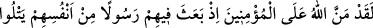
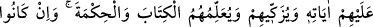
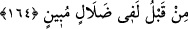

PEYGAMBERLİK GÖREVİ
164. Andolsun ki içlerinden, kendilerine Allah’ın âyetlerini okuyan,
(kötülüklerden ve inkârdan) kendilerini temizleyen, kendilerine Kitap ve hikmeti
öğreten bir Peygamber göndermekle Allah, mü’minlere büyük bir lütufta
bulunmuştur. Halbuki daha önce onlar apaçık bir sapıklık içinde idiler.
“Andolsun ki Allah, mü’minlere büyük lütufta bulundu.” ifadesi, mahzûf bir kasemin
cevabıdır. Vallahi, Hz. Peygamber’in kavminden olup da onunla birlikte îman edenlere
Allah büyük lütufta bulundu, demektir. Allah’ın peygamber göndermesi, beyaz olsun
zenci olsun bütün insanlara bahşedilmiş bir nîmet olduğu halde, bu lütfun, sadece Hz.
Peygamber’in kavmine ait gösterilmesi, bu nîmetten en fazla onlar yararlandığı içindir.
Zira daha önce Rasûlullah gönderilmeden ve onları eğitip terbiye etmeden evvel,
dalâlet olduğu su götürmeyecek kadar açık bir sapıklık içinde bulunuyorlarken onlara
kendi içlerinden bir peygamber gönderdi. O peygamberi, kendi neseplerinden ya da
kendi ırklarından kendileri gibi Araplardan gönderdi. Tâ ki böylece, peygamberlerin ne
kadar doğru ve güvenilir olduğuna vakıf olup onunla iftihar ederek kelâmını kolayca
anlayabilsinler. Bunda Araplar için büyük bir şeref vardır.
Allah (c.c.): “Bu Kur’ân hem senin hem de kavmin için şereftir” buyurmuştur.
(Zuhruf, 43/44).
O peygamber; onlar vahiy duymamış câhil kişiler oldukları halde “kendilerine
Allah’ın kitabını okuyor.” Onları, tabiatlarındaki pisliklerden, çirkin inanç ve
amellerden, günah kirlerinden “temizliyor, kitabı” Kur’ân’ı “ve hikmeti” yani sünneti
“öğretiyor.”
Allah Teâlâ, Hz. Muhammed’i kötü ahlâklı azgın milletlere göndermiş, bu milletlerin
azgın fertlerini zelîl etmiştir. Hz. Muhammed (s.a.)’in doğduğu sırada, putlar baş aşağı
devrilmiş, İran kisrâsının sarayı yarılmış ve bu kisrâdan sonra insanlara hükümranlık
edecek kisrâ sayısınca sarayın on dört sütunu yıkılmış; İran’daki ateşler sönmüş; Sâve
Gölü’nün suyu anormal bir şekilde çekilmiştir. Mevlâsı onu seçmiş ve mahlûkata
takdim etmiştir. O, baştaki göz mesâbesindedir.
Onun yaşadığı zaman dilimi, teşrik günleri gibidir.
Hz. Muhammed’in kendilerine peygamber olarak gönderilmesi karşısında Kureyşliler,
iflâs fakirliğinden sonraki fazilet zenginliğine şaştılar. Kur’ân-ı Kerîm bunlara, cedel